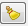

Query
Data Source
The
Query Data Source is
a component
build as a dialog interface, which has the functionality to
execute instructions using SQL over a data source.
It is also possible to persist the query
as a selection over a layer or create a new layer with the result.
It is accessible through:
Tools >
Query Data Source...
The
Query Data Source dialog
consists of the
following components:
The "Datasource" combo box has a list with all datasources available.
Once selected the data source, the "Base Dataset" combo box will
have a list of the available data sets from the selected data source.
This component is used so that the user can manually set the sql to be
executed in the data source. It is possible to run only the command
that is selected in this field. The main sql keywords will be
highlighted assisting the user in building the command to be executed.
-
: Executes the command defined in the data source.
-  :
Clears any command defined in component.
- :
Allows the user to save the commands defined as a sql file.
- : Loads a sql file.
This component has information or operations that can be done about the
query executed.
- Table: Table used to display the result of the query.
- LOG: Used to display any errors on the query execution.
- DataSet: Shows the attributes of a selected data set.
- Layer:
- Layer Selection: Used to select (new selection or
append to a existing selection) objects that are resulted from the
query. The button executes the selection.
Will be listed only the layers that have the same data set
selected in the field "Base DataSet".
- New Layer: Creates a new layer based on a new data set
generated by the query execution. The button creates a new layer.
Display component used to display the geometries resulting from the
query execution to the case where the data set has a spatial attribute.